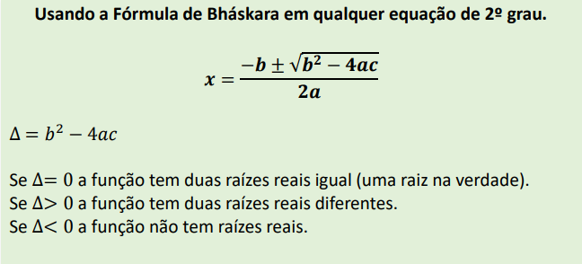
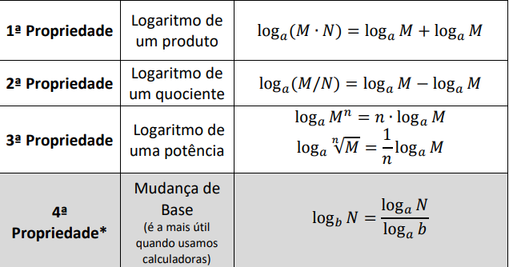

Links
Função Afim
Gráficos
Um gráfico de uma função afim é uma reta, podendo variar o eixo/sentido. Logo, serão necessários no mínimo 2 pontos para traçar a reta.
Para traçarmos o gráfico, podemos utilizar 2 formas diferentes, sendo elas :
Atribuir Valores
Nessa forma, você irá atribuir valores diferentes para 'X', para achar sua correspondência em 'Y'.
Segue abaixo um exemplo :
Neste exemplo, usei a seguinte função : f(x)= -4x + 3. Atribuiremos 2 valores, 2 e -3, respectivamente para 'a' e 'b' para vermos a reta mudando
Assim ficou o gráfico após a alteração :
Podemos reparar que o coeficiente 'a' faz a reta "girar", enquanto o coeficiente 'b' movimenta a reta horizontalmente.
Também temos o 2° método (que é o que eu utilizo) em que nós iremos :
1°) Igualar a equação a zero, para achar o ponto em que corta o eixo x;
2°) Considerar X=0 para achar o ponto em que corta o eixo y.
Aqui está um exemplo resolvido :
Função Quadrática
Definição
Função quadrática é aquela com com 3 coeficiente reais (a, b e c) com 'a' diferente de 0 (zero) tal que : ax^2 + bx + c.
O gráfico de uma função quadrática será sempre uma parábola (um 'U' pra cima ou para baixo), sendo que : Se 'a' > 0 = Concavidade para cima; se 'a' < 0 = concavidade para baixo.
A função de 2° grau é onde iremos aplicar a famosa Bhaskara
Resolução
Também temos 2 maneiras de construir um gráfico de uma função do 2° grau.
1° Método : Atribuir valores à X. É a mesma ideia da atribuição de valores nas funções de 1° grau. No entanto esse método é meio ineficiente e também mais demorado. Logo, irei detalhar melhor o método que eu utilizo que é justamente o de aplicar Bhaskara.
Neste método, temos 4 etapas. A 1° é analisar a concavidade (a>0 = Para cima, a < 0 = Para baixo);
A segunda, é igualar essa equação a 0 (aplicando a fórmula de Bhaskara) :

Após resolver isso, obtemos as 2 raízes que cortam no eixo X. No entanto, épossível termos apenas 1 raíz que corta o eixo X, bem como não termos nenhums raíz cortando.
Para acharmos o corte em Y, olhamos o coeficiente 'c'; e para acharmos o vértice, usamos uma das seguintes fórmulas :
Uma curiosidade, é que o famoso "sorvetão", fórmula da física, é uma função de 2° Grau.
Voltar ao topoFunção Exponencial
Definição
Uma função exponencial é uma função matemática em que a variável independente está no expoente, tendo a forma de : f(x) = a^x, sendo 'a' a base e 'x' o expoente. Essas funções são caracterizadas pelo crescimento ou decrescimento rápido à medida que x aumenta, dependendo do valor da base a. As funções exponenciais são frequentemente usadas para modelar fenômenos que envolvem crescimento ou decaimento exponencial, como populações de organismos, degradação radioativa, juros compostos em finanças, crescimento de investimentos, entre outros. Elas também são essenciais em diversos campos da ciência, engenharia e economia.
Costrução dos Gráficos
° A curva dessa função sempre estará acima do eixo das abcissas. ° 𝑥 é crescente se a > 1 e decrescente se 0 < a < 1.
Para construir o gráfico, 1° iremos analisar se a curva será crescente ou decrescente a partir da base 'a'. 2° iremos atribuir valores a x. Sendo sugeridos : -2, -1, 0, 1 e 2. Se ainda assim precisar de mais, atribua mais valores.
Voltar ao topoLogaritmos
Definição
O logaritmo é uma função matemática inversa da exponenciação. Em essência, o logaritmo de um número em relação a uma determinada base é o expoente ao qual a base deve ser elevada para produzir esse número.
Os logaritmos são frequentemente usados para simplificar cálculos envolvendo exponenciação, especialmente para resolver equações exponenciais. Eles também são essenciais em várias áreas da matemática, ciência e engenharia, incluindo cálculos relacionados a crescimento exponencial, decaimento, taxas de variação e escalas de medida.
Um exemplo para melhorar a visualização dessa definição :
No entanto, as vezes iremos nos deparar com os logaritmos de outras formas,
nos forçando a usar as Propriedades dos Logaritmos :

Resumo/Minha Opinião/Oque Aprendi
Sobre as funções afins, acredito que entendi como elas representam relações lineares entre variáveis.
Seus gráficos são sempre retas, o que facilita a compreensão das mudanças proporcionais entre os valores das variáveis. Gosto da simplicidade dessas funções e de como elas podem ser aplicadas em situações do dia a dia, como modelar custos fixos e variáveis em economia.
Quanto às funções exponenciais, achei fascinante a forma como os valores crescem ou diminuem de maneira
rápida à medida que o expoente aumenta. Essas funções parecem ser muito úteis para descrever processos de crescimento ou decaimento acelerado, como populações e fenômenos naturais. No entanto, sinto que a complexidade aumenta com bases não-inteiras, tornando os cálculos mais desafiadores.
As funções quadráticas me impressionaram com suas curvas características.
A parábola resultante pode abrir para cima ou para baixo, dependendo do coeficiente quadrático.
A ideia de que muitos fenômenos naturais podem ser modelados por essas funções é interessante.
Além disso, a fórmula quadrática parece ser uma ferramenta poderosa para resolver equações desse tipo, embora possa ser um pouco complexa.
Por fim, os logaritmos acrescentaram uma nova dimensão ao meu entendimento das exponenciais.
A noção de que eles representam o expoente necessário para atingir um certo valor é uma abordagem única
para resolver problemas. Parece que eles têm aplicações extensas, desde simplificar cálculos até resolver questões de crescimento exponencial e escalas de medida.
No geral, adorei trabalhar com essas funções e principalmente com o GeoGebra, que é um software que eu não conhecia anteriormente. E apenas um comentário a mais : adorei ver que essas funções (todas) podem facilmente serem explicadas através de exemplos da vida real, já que existem inúmeros casos de aplicações no nosso cotidiano.
Voltar ao topo